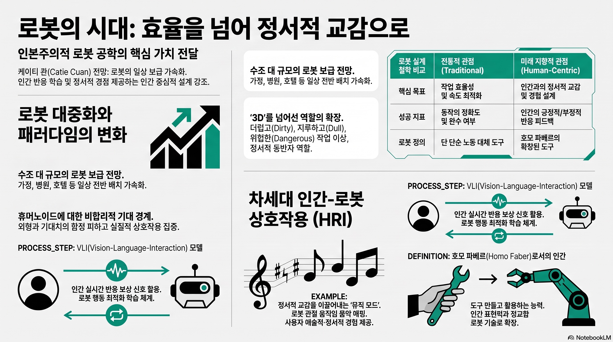

EO KoreaMORNING DIGEST · 2026-07-26 · EO Korea🎬 영상
스탠퍼드 로봇 공학자가 바라본 로봇의 시대 | Stanford, Catie Cuan

01핵심 개요
항목
내용
채널
EO Korea
제목
스탠퍼드 로봇 공학자가 바라본 로봇의 시대 \
Stanford, Catie Cuan
길이
약 18분 48초(1128초)
핵심결론 1
아이폰이 전 세계 10억 대 보급에 13년 걸렸듯, 앞으로 수십억~수조 대의 로봇이 가정·병원·호텔·요양시설에 등장할 것이며, 로봇을 좁은 수직 응용에서 벗어나게 하면 엄청난 기회가 생긴다
핵심결론 2
인간형(휴머노이드) 로봇에 대한 기대는 로봇이 사람과 닮을수록 사람들의 기대치가 비합리적으로 높아진다는 로드니 브룩스의 통찰처럼 위험하며, 로봇의 미래상은 '더럽고 지루하고 위험한 일'을 넘어 훨씬 넓게 상상되어야 한다
핵심결론 3
저자는 구글 사무실 로봇 200대에 '뮤직 모드'(관절 움직임을 음악 샘플에 매핑하는 소프트웨어)를 탑재해 감정적 반응을 이끌어냈고, 이는 인간이 기술과의 상호작용에서 효율을 넘어 정서적 경험을 원한다는 증거였다
핵심결론 4
스탠퍼드 로봇 공학 센터에서 구축 중인 VLI(Vision-Language-Interaction) 모델은 로봇 동작의 성공 여부를 인간의 반응(긍정/부정)으로 측정하는 최초의 모델로, 사람과 자연스럽게 소통하는 로봇으로 가는 첫걸음이다
02핵심 내용 구조
1) 화자 소개와 문제의식
케이티 콴(Catie Cuan)은 아트랩(ArtLab)의 창립자 겸 CEO로, 로봇 안무가·로봇공학자·연구원·기업가·예술가라는 다중 정체성을 가짐
목표는 AI·로봇 같은 차세대 기술을 더 인간적이고 기발하며 누구나 접근 가능하게 만드는 것
'인본주의(humanism)'를 인간이 더 큰 힘과 안전함을 느끼며 더 건강하고 나은 삶을 살도록 기계와의 상호작용·경험을 설계하는 것으로 정의
활동 거점은 캘리포니아 팔로알토 스탠퍼드 캠퍼스 내 스탠퍼드 로봇 공학 센터로, 가정용·산업용·의료용·수중·탐사 로봇 등 다양한 분야 연구자와 교육·예술·문화·무용 분야가 협업하는 구조
2) 로봇 대중화의 규모와 기회
비유: 아이폰이 전 세계 10억 대 보급에 걸린 시간은 13년에 불과, 로봇도 유사한 궤적으로 향후 수십억~수조 대가 보급될 것으로 전망
로봇이 사무실·병원·호텔·가정·요양 시설 등 일상 공간에 배치될 것이며, 특정 분야에 국한된 좁은 수직적 응용에서 벗어나 더 지능적으로 만들어 사람과 함께 생활하는 환경에 놓일 때 큰 기회가 발생
인간과 로봇이 서로를 이해하도록 만드는 과제(HRI, Human-Robot Interaction)가 저자 연구의 핵심 초점
3) VLI 모델 — 인간 반응 기반 로봇 학습
스탠퍼드 팀이 구축 중인 'VLI(Vision-Language-Interaction)' 모델은 환경 속 인간이 해야 할 일에 동기를 부여받는 최초의 모델
기존 LLM 기반 로봇 동작 생성은 인간 정보를 바탕으로 동작 시퀀스를 만들지만, VLI는 로봇 동작의 성공 여부를 인간의 반응(긍정적/부정적)으로 측정
목표는 사람들과 자연스럽고 직관적으로 소통하는 로봇의 첫걸음이며, 향후 수십억 대의 자율 기계가 수십억 명과 수조 건의 상호작용을 하게 될 것이므로 그 상호작용이 안전하고 읽기 쉽고 명확해야 한다는 문제의식
4) 개인적 배경 — 무용수에서 로봇공학자로
샌프란시스코 베이 지역 출신, 쿠바계 아버지 영향으로 어릴 때부터 사교댄스와 수학·과학을 함께 접함
대학 졸업 후 IT 기업 인턴을 거쳐 뉴욕에서 사모펀드 컨설팅 일을 시작했으나 적성에 맞지 않음을 깨닫고 퇴사, 뉴욕 링컨 센터의 메트로폴리탄 오페라 발레단에서 전문 댄서로 활동
이 시기 아버지가 병원에 입원했는데, 환자를 둘러싼 의료기기들이 삐삐거리고 불투명해 억압적으로 느껴졌던 경험이 이후 '인간 중심 기술 설계'라는 문제의식의 계기가 됨
5) 구글 '뮤직 모드' 프로젝트
구글 재직 시절 사무실 곳곳에서 테이블 청소·쓰레기 분류·회의실 정리를 수행하던 로봇 200대를 접함, 초기엔 신기했지만 곧 "그냥 느린 로봇"으로 시들해지는 직원 반응을 목격
동료 톰의 제안("로봇이 음악을 연주하는 대신 로봇 자체가 음악이 되면 어떨까")에서 출발해 작곡가 피터 반 스트래튼과 함께 '뮤직 모드' 소프트웨어 개발
로봇의 각 관절 움직임을 음악 샘플에 매핑(집게 개폐 시 찰칵 소리, 몸통 회전 시 저음 등)해 로봇 동작이 교향곡처럼 들리도록 구현, 로봇 아홉 대가 동시에 작업하면 하나의 오케스트라가 됨
출시 후 알지 못하는 구글 직원들로부터 "책상에서 울고 있다", "기계가 이런 감정을 느끼게 할 줄 몰랐다"는 이메일이 쇄도, 기술이 순수 도구를 넘어 정서적 경험을 제공해야 한다는 확신의 근거가 됨
6) 휴머노이드 로봇에 대한 비판적 시각
소설·미디어의 영향으로 현재 수십 개의 휴머노이드(인간형) 로봇 회사가 존재하며, "인간이 쓰는 공간이니 사람처럼 생겨야 한다"는 통상적 주장이 있음
로봇공학계 원로 로드니 브룩스(Rodney Brooks)의 통찰 인용: 로봇이 사람과 닮을수록(좌우대칭, 인간과 비슷한 비율) 거울 뉴런이 활성화되어 사람들의 기대치가 비합리적으로 높아짐
저자는 77세 아버지(영어가 세 번째 언어) 사례를 들어 "이것이 정말 우리가 원하는 로봇인가"라는 질문을 던지며, 업계가 로봇의 미래상에 대해 근시안적 시각에 갇혀 있다고 비판
'더럽고(dirty)·지루하고(dull)·위험한(dangerous)' 3D 작업에만 로봇을 국한하는 통념도 넘어서야 한다고 주장, 사례로 2010년대 중반 유행한 물개 로봇 '파로(Paro)'(아프거나 외로운 사람의 정서적 동반자), 자폐 아동 사회성 학습 지원 로봇 등을 제시
7) 로봇과 함께한 다양한 경험 및 '도구를 만드는 인간' 철학
저자는 경력 동안 룸바 로봇청소기, 소형 휴머노이드, 드론, 대형 산업용 로봇 팔, 구글 모바일 조작기, 보스턴 다이내믹스 사족보행 로봇 등을 다뤄봄
2017년 에이미(Ai.Mi) 연구실에서 로봇과 함께 춤춘 경험을 계기로, 인간이 석기 도구·불·바퀴·인쇄기·현대 컴퓨터·로봇으로 이어지는 도구 사용의 긴 연속선 위에 있다는 통찰을 얻음
아리스토텔레스를 인용해 인간을 '호모 사피엔스(현명한 자)'가 아니라 '호모 파베르(도구를 만드는 자, homo faber)'로 불러야 한다는 주장을 소개, 지능이 뛰어난 종은 많지만 도구와의 관계·도구 제작 능력이 인간을 특별하게 만든다고 강조
로봇과 오래 일할수록 인간의 표현력·민첩성·문 손잡이 조작이나 계단 이동 같은 일상 동작의 정교함이 얼마나 놀라운지 재확인, 이는 평생의 학습과 세대를 거친 진화의 산물이라는 점을 지적
8) 어려움의 가치와 스탠퍼드 CS 334 수업
마크 스카일러 스콧(Stanford) 교수의 "사람의 심장을 3D 프린터로 출력하는 데 25년이 걸릴 것"이라는 발언을 인용하며, 진짜 가치 있는 도전은 오랜 노력과 어려움을 요구한다는 관점 제시
무용 훈련의 교훈("오디션에 400명 중 4명만 뽑힌다면 잘해야 한다")을 로봇공학 연구에 적용, 영향력이 큰 어려운 문제를 추구하는 것이 자신의 원칙이라고 밝힘
스탠퍼드에서 컴퓨터 과학과 연극·공연예술이 공동 개설한 최초의 과목 'CS 334: 로봇과 예술'을 강의, 학생들이 AI·로봇을 활용해 정치적·철학적·사회적 메시지를 담은 창작을 하도록 지도
수업의 핵심은 "무엇을 만들까"가 아니라 "왜 만들까"라는 질문이며, 한정된 자원(에너지·능력·네트워크·기술) 중 되찾을 수 없는 유일한 자원인 시간을 어떻게 쓸지 이해하는 것이 중요하다고 강조
03기술적 맥락
VLI(Vision-Language-Interaction) 모델은 기존 로봇공학에서 널리 쓰이는 VLA(Vision-Language-Action) 모델 계열의 확장으로 이해할 수 있으며, 인간의 실시간 반응을 보상 신호로 활용해 로봇 행동의 성공을 정의한다는 점이 특징
HRI(Human-Robot Interaction, 인간-로봇 상호작용)는 로봇이 인간의 예측 불가능한 행동·말·움직임에 어떻게 반응하고 적응할지를 다루는 로봇공학의 오랜 난제
거울 뉴런(mirror neuron)은 타인의 행동을 관찰할 때 활성화되는 신경세포로, 인간형 로봇을 볼 때 무의식적으로 인간 수준의 능력을 기대하게 만드는 심리적 기제로 인용됨
04전략적 의미
로봇 산업이 대량 보급 국면(아이폰급 확산 속도)에 진입하는 시점에서, 폼팩터(휴머노이드 여부)보다 인간과의 정서적·상호작용적 설계가 채택률과 만족도를 좌우할 수 있음을 시사
'기능 우선' 로봇 설계에서 '경험·정서 우선' 설계로의 전환 필요성 제기 — 구글 뮤직 모드 사례처럼 동일한 하드웨어라도 상호작용 방식 변화만으로 사용자 반응이 극적으로 달라질 수 있음
인간 반응을 학습 신호로 삼는 VLI 접근은 로봇의 상용화·가정 보급 단계에서 안전성·신뢰성 확보의 새로운 축이 될 잠재력
05핵심 워크플로우·방법론
뮤직 모드 개발 과정: 로봇의 관절별 움직임을 식별 → 각 움직임에 음악 샘플 매핑(조합론적 설계) → 작곡가와 협업해 사운드 디자인 → 소프트웨어로 배포해 로봇에 "음악 모드 켜줘" 명령으로 활성화
VLI 모델 학습 구조: 인간이 환경 속에서 해야 할 일을 로봇이 관찰 → 로봇이 동작을 생성 → 인간의 반응(참여도 증가/감소)을 측정해 동작의 성공 여부를 판정 → 이를 반복 학습에 반영
CS 334 수업 방법론: 학생이 먼저 "왜 만드는가"(가치관·메시지)를 정의 → 이후 무한한 기술적 선택지 중 목적에 맞는 것을 빠르고 쉽게 구현
06활용 시나리오
요양·병원 환경에서 정서적 동반자 역할을 하는 로봇(파로 사례처럼) 도입해 환자·고령자의 불안감을 완화
사무실·서비스 공간의 반복 작업 로봇에 '뮤직 모드'류 인터랙션 레이어를 추가해 직원·이용자의 정서적 수용도를 높이는 UX 설계
자폐 아동 대상 사회성 학습 지원 로봇처럼, 특정 인구집단의 커뮤니케이션·학습을 보조하는 특화 로봇 개발
대학·연구기관에서 공학과 예술·인문학을 결합한 융합 교육과정을 설계해 기술의 '왜'를 다루는 인재 양성
07현황 및 전망
현재 로봇공학 업계는 인간형(휴머노이드) 폼팩터에 쏠려 있으며, 저자는 이를 근시안적이라 평가하고 더 넓은 폼팩터·상호작용 방식에 대한 상상력을 촉구
스탠퍼드 로봇 공학 센터와 저자의 VLI 연구는 아직 초기 단계("첫걸음")로, 인간 반응 기반 학습이 실제 상용 로봇에 어떻게 적용될지는 향후 검증 필요
저자는 앞으로도 인간에게 영감을 주는 사람들과 함께 영향력이 큰 어려운 문제를 추구하겠다는 방향성을 재확인하며, 스탠퍼드 CS 334 강의를 통해 차세대 인재들에게 이 문제의식을 전파 중